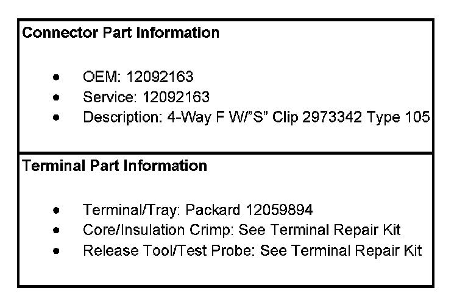
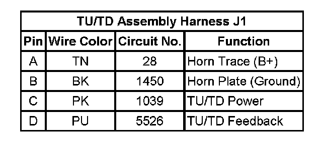
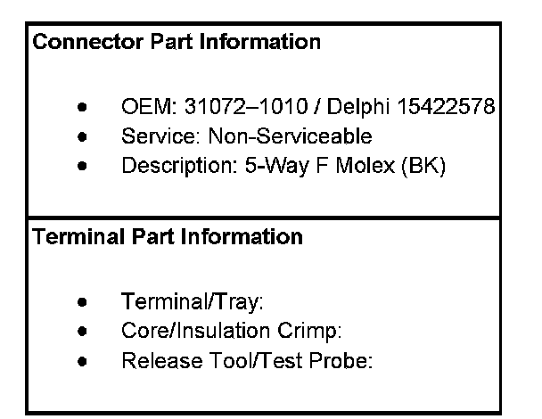
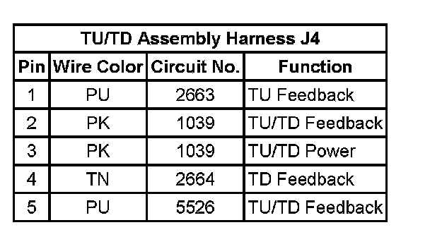
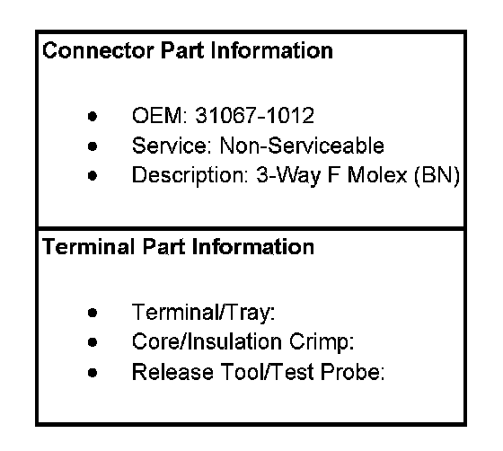
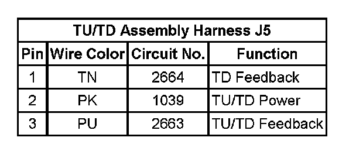

Automatic Transmission Related Connector End Views
Automatic Transmission Related Connector End Views
TU/TD Assembly Harness J1
4-Pin TU/TD Assembly Harness J1:

TU/TD Assembly Harness J1:

TU/TD Assembly Harness J4
4-Pin TU/TD Assembly Harness J4:

TU/TD Assembly Harness J4:

TU/TD Assembly Harness J5
4-Pin TU/TD Assembly Harness J5:


TU/TD Assembly Harness J5:
